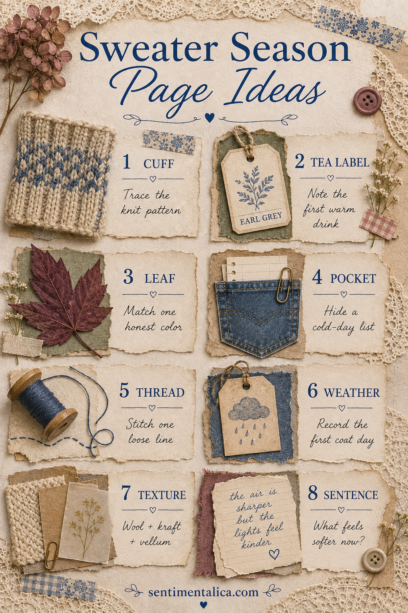

Sweater season begins before autumn becomes dramatic. It is the first morning you look for a cardigan, the first mug held with both hands, and the first time warm light indoors feels especially kind. Those small shifts make better journal material than a page crowded with generic pumpkins.
Use these ideas separately or combine three into one tactile spread.
Borrow a knit rhythm
Look closely at a sweater cuff and sketch its repeated stitches as lines, diamonds, or small V shapes. You do not need to draw realistic knitting. The rhythm alone can become a border, stencil, or pen pattern behind a label.
Save the first warm-drink detail
Keep a tea label, café sleeve fragment, or handwritten note about the first drink that felt properly seasonal. Add the time of day and what the room smelled like. Tiny sensory facts make the page personal.
Match one honest leaf color
Instead of using every autumn color, choose one leaf from your walk and mix or select paper that matches it closely. Burgundy, tired green, tobacco brown, or yellowed cream often feels more sophisticated than bright orange.
Turn a pocket into the story
Use a denim-colored paper pocket for a list of cold-day comforts, books to read, walks to take, or soups to make. Keep the list removable so it can change as the season unfolds.

Stitch one loose line
Add a single line of thread across a paper edge or around a label. It can be real stitching, glued thread, or a drawn imitation. One imperfect line suggests mending and warmth without making the page heavy.
Record the first coat day
Write the date, temperature, wind, and what finally made you reach for another layer. Weather becomes meaningful when it is connected to a choice or sensation rather than copied as a number.
Pair three textures
Try wool or knit fabric, kraft paper, and vellum. Wool gives softness, kraft provides structure, and vellum brings light. Keep the fabric piece small and place it away from the journal’s binding so the book can still close.
Finish one sentence
Write: “What feels softer now?” The answer might be the light, your schedule, a difficult feeling, the sound of the house, or the way evenings begin. Let the sentence be honest rather than poetic.
For a balanced spread, choose one large paper base, one pocket or photograph, one textile fragment, and one written detail. Repeat denim blue or faded berry in three small places, then leave part of the paper visible.
If you want a second page, make it quieter than the first. Use a faint knit pattern as the background, attach one weather note, and leave enough room to continue writing later. A seasonal journal becomes more truthful when it can grow over several weeks instead of trying to summarize autumn in one decorated afternoon.
Sweater-season pages can be cozy without becoming themed decoration. Build them from evidence of the actual day: the cuff you wore, the drink you chose, the leaf you found, and the change you noticed.
Find more seasonal journal inspiration in the Sentimentalica journal.